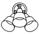
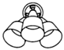

|
|
| |
DESCRIPTION |
|
FINISH |
CAT # |
LAMPS |
|
|
|  |
2030-T Series bullet fixtures can be used indoors or out
to highlight signs or displays or anyplace an accent light is needed.
Use only with PAR-30 halogen lamps. |
|
Grey
Black
White
Satin Aluminum
Satin Brass
Bronze
Antique Brass
Rust * |
2030-T
2031-T
2032-T
2034-T
2035-T
2036-T
2037-T
2038-T |

PAR-30-S
to 75
watts |
| |
|
|
2040-T Series bullet fixtures are ideally suited for small-scale
interior applications but also may be used outdoors. Use to light
work or study areas, to highlight a picture or planter, or to accent
a sculpture. |
|
Grey
Black
White
Satin Aluminum
Satin Brass
Bronze
Antique Brass
Rust * |
2040-T
2041-T
2042-T
2044-T
2045-T
2046-T
2047-T
2048-T |

PAR-20
or
R-20 to
75 watts |
| |
|
|
2050-T Series three-light bullet fixtures can be used to
highlight three different areas or one broad area. They may be used
indoors our outdoors. |
|
Grey
Black
White
Satin Aluminum
Satin Brass
Bronze
Antique Brass
Rust * |
2050-T
2051-T
2052-T
2054-T
2055-T
2056-T
2057-T
2058-T |
PAR-30-L
or
BR-30
to 100
watts
|
| |
|
|  |
2060-T series three-light bullet fixtures can be used to
provide the maximum illumination from a single location. They are
ideally suited for lighting a large yard or driveway and for security
lighting. |
|
Grey
Black
White
Satin Aluminum
Satin Brass
Bronze
Antique Brass
Rust * |
2060-T
2061-T
2062-T
2064-T
2065-T
2066-T
2067-T
2068-T |


PAR-38
or BR-40
to 150
watts |
| |
|
| |
*special order finish |
|
|
|
|
|
|
|
|
|
|